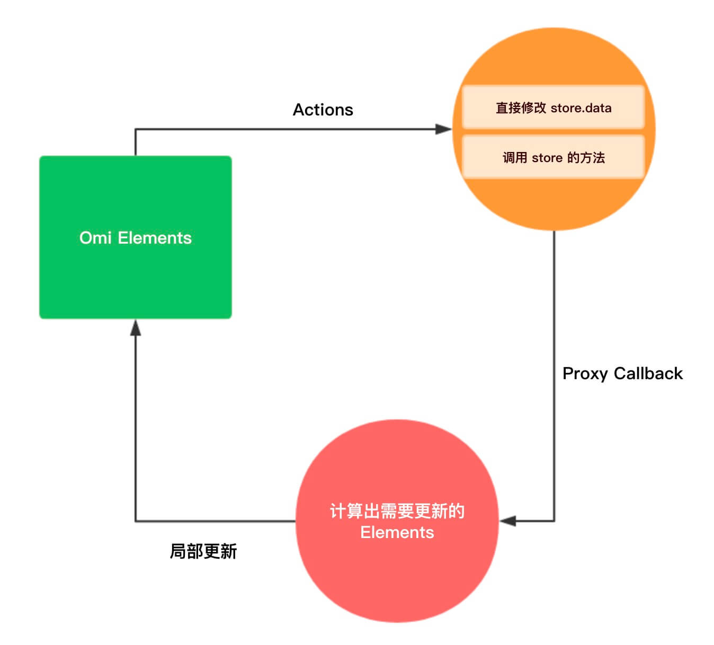

Store 是什么？
Store 是 Omi 内置的中心化数据仓库，他解决和提供了下面问题和能力：
组件树数据共享
数据变更按需更新依赖的组件

两份代码完全上手 Store
path/elements/app/index.omi下的根组件
1
2
3
4
5
6
7
8
9
10
11
12
13
14
15
16
17
18
19
20
21
22
23
24
25
26
27
28
29
30
31
32
33
34
35
36
37
38
39
40
41
42
43
44
45
| <template name="my-app">
<div>
<p>
Clicked: {this.use.count} times
{' '}
<button onClick={this.add}>+</button>
{' '}
<button onClick={this.sub}>-</button>
{' '}
<button onClick={this.addIfOdd}>
Add if odd
</button>
{' '}
<button onClick={this.addAsync}>
Add async
</button>
</p>
</div>
</template>
<script>
export default class {
static use = [
{ count: 'count' }
]
add = () => this.store.add()
sub = () => this.store.sub()
addIfOdd = () => {
if (this.use.count % 2 !== 0) {
this.store.add()
}
}
addAsync = () => {
setTimeout(() => this.store.add(), 1000)
}
}
</script>
<style lang="scss">
p {
color: #58bc58
};
</style>
|
path/src/index.js全局的入口文件代码
1
2
3
4
5
6
7
8
9
10
11
12
13
14
| import { render } from 'omi'
import './elements/app'
render(<my-app />, '#root', {
data: {
count: 0
},
sub() {
this.data.count--
},
add() {
this.data.count++
},
})
|
- 通过
static use 声明依赖的 path
- store 通过 render 的第三个参数从根节点注入到所有组件。
Store 里的 data:
1
2
3
4
5
6
7
8
9
10
| {
count: 0,
arr: ['china', 'tencent'],
motto: 'I love omi.',
userInfo: {
firstName: 'dnt',
lastName: 'zhang',
age: 18
}
}
|
下面举一个复杂的 use 例子：
1
2
3
4
5
6
7
8
9
10
11
12
13
14
15
16
17
18
19
20
| static use = [
'count',
'arr[0]',
{
reverseMotto: [
'motto',
target => target.split('').reverse().join('')
]
},
{ name: 'arr[1]' },
{
fullName: [
['userInfo.firstName', 'userInfo.lastName'],
(firstName, lastName) => firstName + lastName
]
},
]
|
下面看看 JSX 中使用:
1
2
3
4
5
6
7
8
9
10
11
12
13
14
15
16
17
18
19
20
21
22
| ...
...
<template>
<div>
<button onClick={this.sub}>-</button>
<span>{this.use[0]}</span>
<button onClick={this.add}>+</button>
<div>
<span>{this.use[1]}</span>
<button onClick={this.rename}>rename</button>
</div>
<div>{this.use.reverseMotto}</div><button onClick={this.changeMotto}>change motto</button>
<div>{this.use.name}</div>
<div>{this.use[3]}</div>
<div>
{this.use.fullName}
<button onClick={this.changeFirstName}>change first name</button>
</div>
</div>
</template>
...
...
|
如果不带有 alias ，你也可以直接通过 this.store.data.xxx 访问。
当 store.data 发生变化，依赖变更数据的组件会进行更新，举例说明 Path 命中规则:
| Proxy Path(由数据更改产生) |
static use 中的 path |
是否更新 |
| abc |
abc |
更新 |
| abc[1] |
abc |
更新 |
| abc.a |
abc |
更新 |
| abc |
abc.a |
不更新 |
| abc |
abc[1] |
不更新 |
| abc |
abc[1].c |
不更新 |
| abc.b |
abc.b |
更新 |
以上只要命中一个条件就可以进行更新！
总结： 只要注入组件的 path 等于 use 里声明 或者在 use 里声明的其中 path 子节点下就会进行更新！